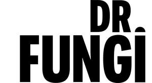

Trade Mark Journal No.2025/015 11 April 2025
UK00004178149 24 March 2025 (5,29)

- Class 5
- Nutritional supplements consisting of fungal extracts; Powdered nutritional supplement drink mix; Herbal supplements; Liquid herbal supplements; Health-aid foods supplement containing red ginseng; Dietary supplements in powder form; Food supplements; Nutritional supplement meal replacement bars for boosting energy; Food supplements in liquid form; Anti-oxidant food supplements; Liquid dietary supplements; Dietary supplement drink mixes; Powdered nutritional supplement energy drink mix; Vitamin and mineral food supplements; Liquid nutritional supplements; Powdered fruit-flavored dietary supplement drink mix; Protein powder dietary supplements; Prebiotic supplements; Liquid vitamin supplements; Vitamin preparations in the nature of food supplements; Probiotic supplements; Protein supplements; Food supplements for dietetic use; Dietary food supplements; Vitamin supplements; Protein dietary supplements; Mineral dietary supplements; Nutritional supplements; Dietary supplements; Health food supplements made principally of vitamins; Mineral nutritional supplements; Nutritional supplement energy bars; Dietary supplements for medical use; Vitamin and mineral supplements; Anti-oxidant supplements; Health-aid foods supplements containing ginseng; Medicated food supplements; Plant and herb extracts for medicinal use; Health food supplements made principally of minerals; Dietary and nutritional supplements; Food supplements for sportsmen; Mineral dietary supplements for humans; Medicinal herb extracts; Dietary supplements for humans; Herbal dietary supplements for persons special dietary requirements; Food supplements for medical purposes; Ginseng for medicinal use; Food supplements for non-medical purposes; Herbal tea for medicinal use; Herbal male enhancement capsules.
- Class 29
- Mushrooms, preserved; Preserved mushrooms; Mushrooms, prepared; Dried funghi; Processed fruits, fungi, vegetables, nuts and pulses; Processed edible cordyceps.
Dr Fungi Wellness